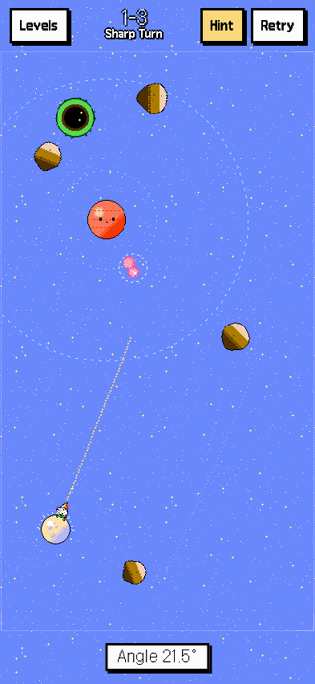
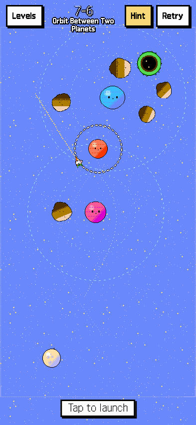
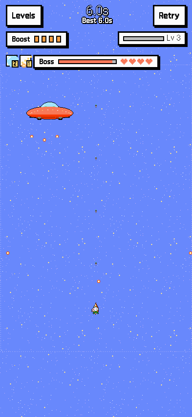
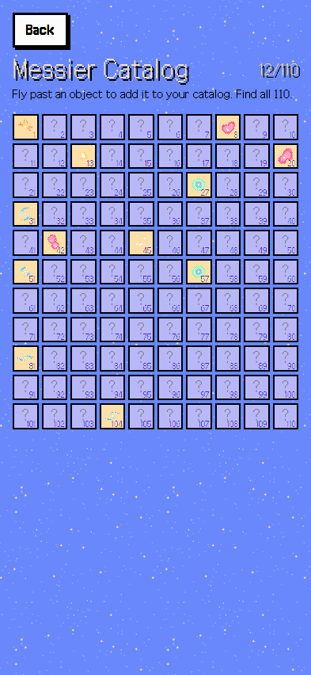

스페이스서퍼 달토끼
Space Surfer: Moon Rabbit · 퍼즐 게임 · 무료 · 개발 중
당근 로켓을 탄 달토끼가 행성 사이를 날아요. 기회는 한 번. 끌어서 조준하고 손을 놓으면, 중력이 길을 꺾어 토끼굴로 데려갑니다.
이 버튼은 7장 56단계와 인피니티가 처음부터 모두 열린 개발자 버전으로 들어가요. 만드는 중이라 단계나 저장 기록이 바뀌거나 초기화될 수 있어요. 정식 무료 웹판은 itch.io에 먼저 열고, 이어서 안드로이드 앱으로 냅니다. 소식은 소식과 RSS에 가장 먼저 올려요.




무엇이 들어 있나요
- 7장 56단계 — 행성, 블랙홀, 외계인, 움직이는 행성, 넓은 맵, 분사, 궤도 행성. 단계마다 별 셋.
- 운이 아닌 퍼즐 — 모든 단계가 ‘풀린다’와 ‘사람 손으로 해낼 여유가 있다’까지 검증돼 있어요.
- 인피니티 — 끝없는 우주에서 오래 버티기. 레벨이 오르면 능력을 고르고, 오늘의 우주는 모두가 같은 판이라 기록을 겨룹니다.
- 메시에 도감 — 단계 곳곳에 숨은 실제 천체 110개. 스치면 모입니다.
- 픽셀 아트 · 폰과 PC · 한국어, English, 日本語, 简体中文.